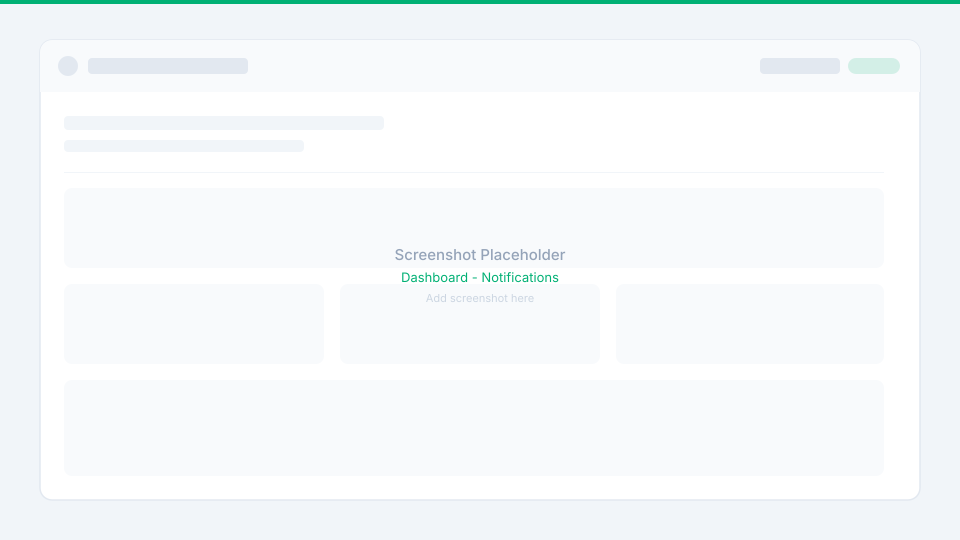
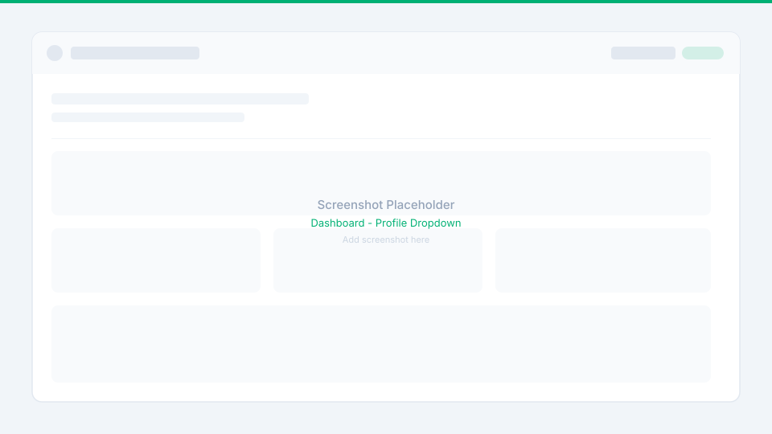
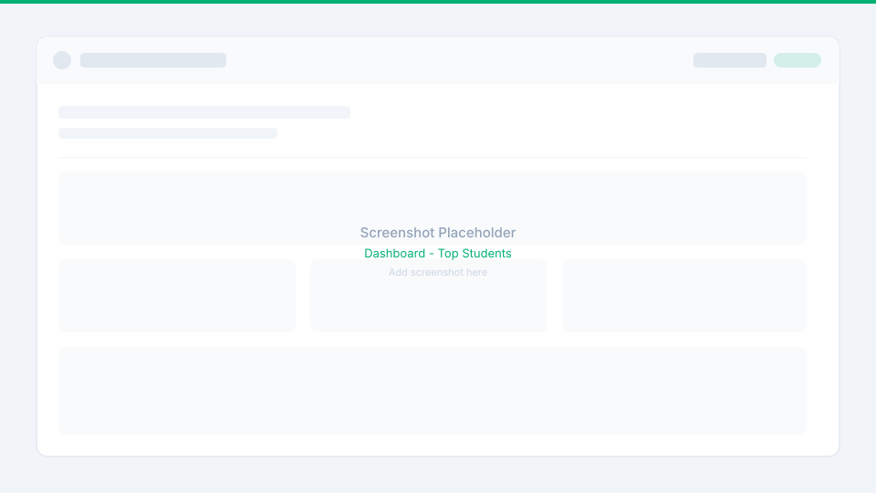
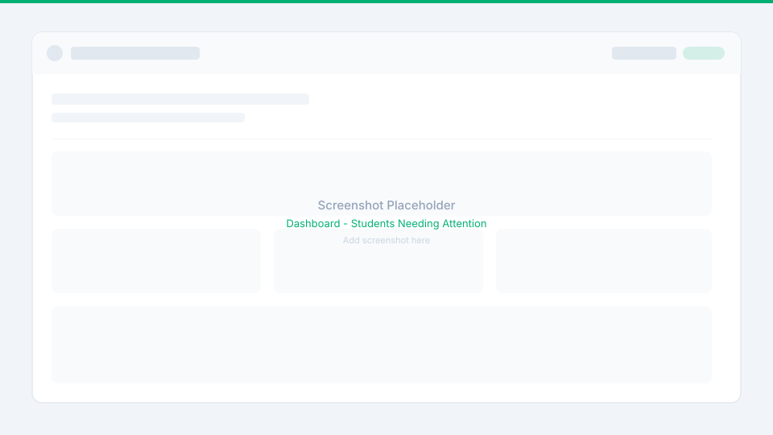

Module 1: Dashboard & Overview
Real-time school performance metrics, role-based toolbars, and learner compliance tracking.
- Admin & Teacher Toolbars: Global student search, role-scoped notifications, and a comprehensive user profile dropdown.
- Quick-Access Hubs: Jump directly to Students, Documents, Users, and core settings from prominent dashboard shortcut cards.
- Visual Compliance Analytics: Real-time charts for JHS/SHS digitalization progress, document breakdown by grade level, 30-day upload trends, and disk storage consumption.
- Actionable Student Monitoring: Instant rankings for top compliant learners alongside flags for students needing immediate document compliance attention.
The Dashboard serves as the central command center in TIS-RMS. It aggregates critical school data into an accessible, intuitive interface that automatically adapts to whether an Administrator or Classroom Teacher is currently signed in.


Admin & Teacher Shared Header Tools
Both Administrator and Teacher roles have immediate access to three essential navigation utilities in the top header:
Global Student Search
Search for students across the entire school by first name, last name, or 12-digit LRN, and navigate directly to the Students screen.
Role-Based Notifications
Administrators receive school-wide system notices, while teachers receive targeted notifications related specifically to their assigned advisory sections.
Profile Dropdown
Displays user full name, assigned role, registered email address, and phone number, with direct buttons to navigate to Settings or Log Out.
Direct learner lookup by name or LRN with instant transition to the Students module

Audited system notifications filtered automatically by administrative or teacher scope

Quick-view profile details, contact information, Settings shortcut, and secure sign-out
Administrator Side: Dashboard Overview
The Administrator Dashboard provides comprehensive high-level control with quick navigation shortcuts and multi-dimensional analytics:
- Quick Navigation: Direct one-click links to the Academic & Class Management screen and the Document Requirements screen.
- Quick-Access Action Cards: Fast navigation tiles to the Students, Documents, and Users modules.
Comprehensive control center featuring quick navigation cards, class setup shortcuts, and status counters
Administrator Visual Graphs & Analytics
Administrators can monitor institution-wide health through five rich visual graphs updated live from the server:
- Digitalization Progress for JHS and SHS: Tracks the exact count of students who have completed all required documents, clearly separated into Junior High School (JHS) and Senior High School (SHS) cohorts.
- Overall Document Status: Displays the total count and status breakdown of uploaded files across the school.
- Document Breakdown by Grade Level: An interactive pie chart visualizing completed vs. submitted document requirements across Grade 7 through Grade 12.
- 30-Day Upload Trend: A dynamic line graph showing document submission velocity over the past 30 days to identify submission spikes.
- Storage Analytics: Visualizes which document categories (SF9, SF10, PSA, etc.) consume the most server storage space.
Interactive charts displaying JHS/SHS digitalization progress, grade distribution pie chart, upload trend line, and disk storage
Administrator Student Monitoring Lists
Top Students by Documents
School-wide ranking of learners based on total uploaded documents, recognizing complete and compliant digital portfolios.
Students Needing Attention
Identifies students missing critical document requirements, allowing administrators to click directly and see which specific requirements are missing.

Leaderboard of learners with the highest submission counts across all grade levels

Real-time list of learners with incomplete requirements, with one-click checklist inspection
Teacher Side: Dashboard Overview
The Teacher Dashboard is streamlined to focus specifically on the teacher's assigned advisory classes:
- Quick-Access Cards: Direct navigation buttons to the Students and Documents modules scoped to their advisory classes.
- Top Students by Documents: Shows a ranking of students based on the number of uploaded documents strictly from their assigned advisory sections.
- Students Needing Attention: Highlights learners in their assigned sections with missing documents, allowing teachers to view exactly which requirements need to be submitted.
Tailored classroom dashboard with section switchers, advisory compliance metrics, and missing document flags